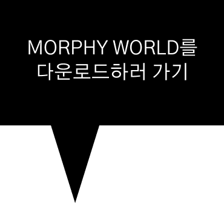
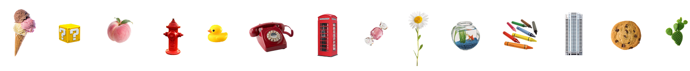
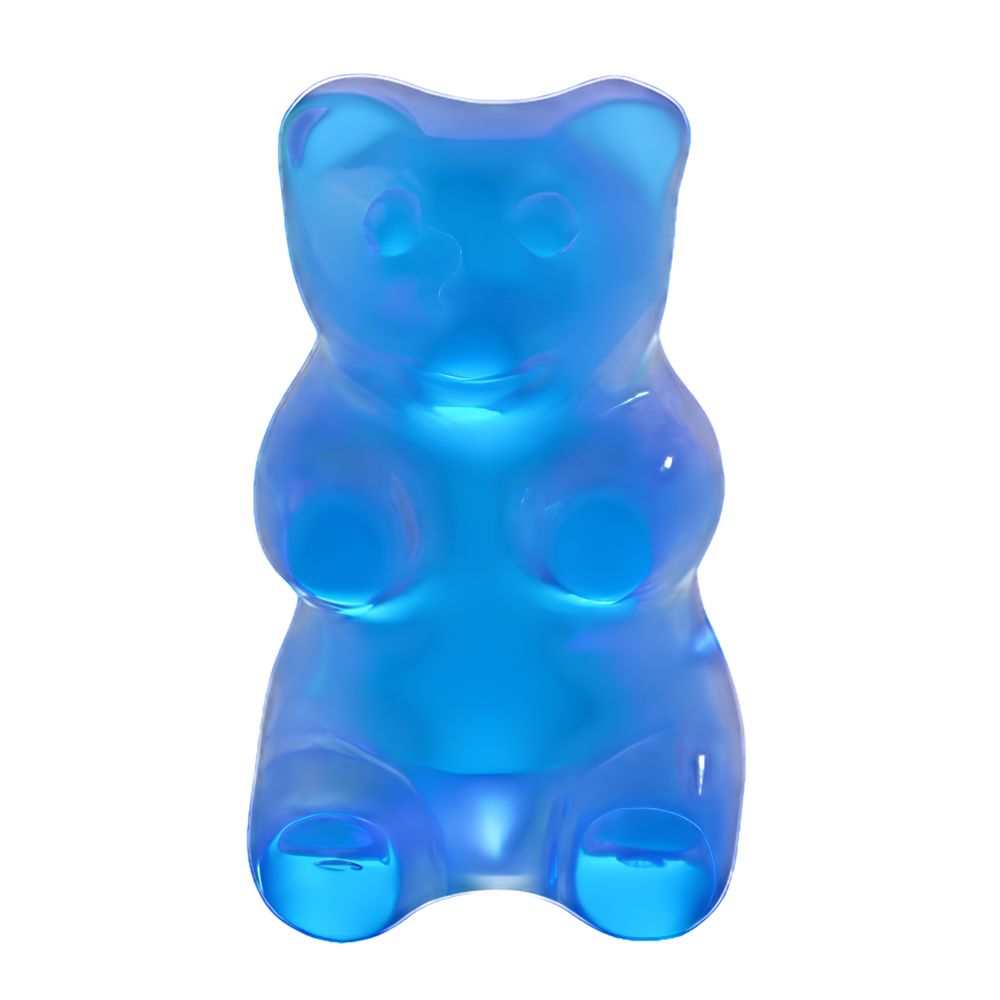
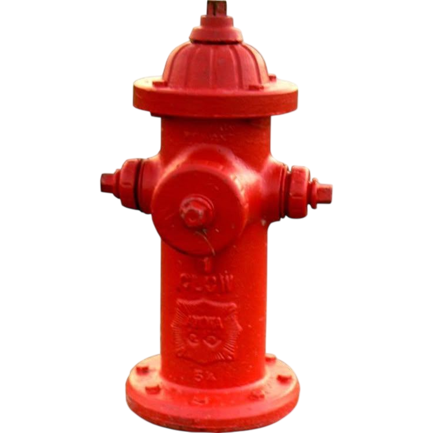
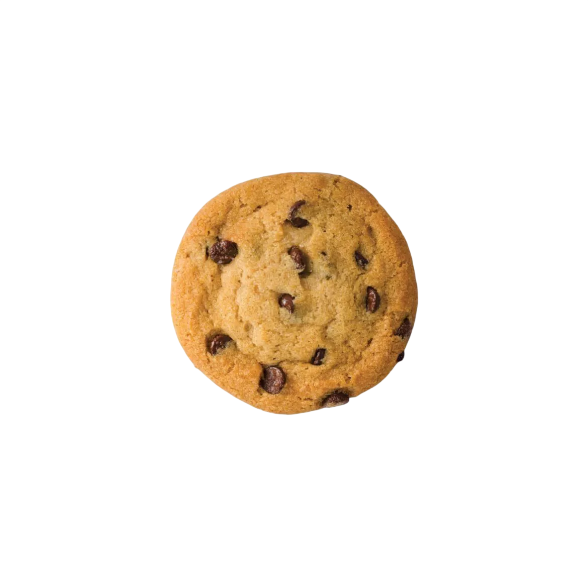
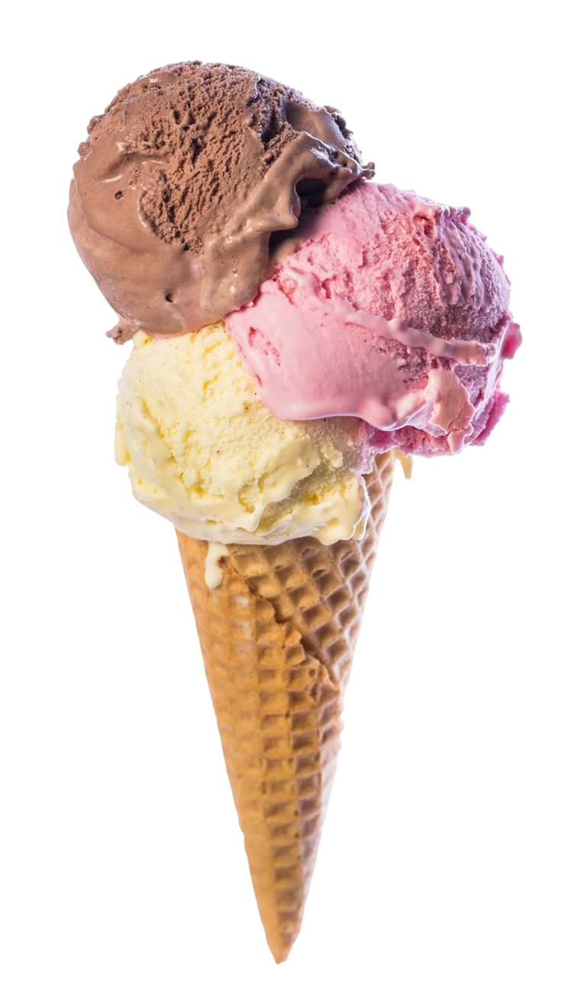
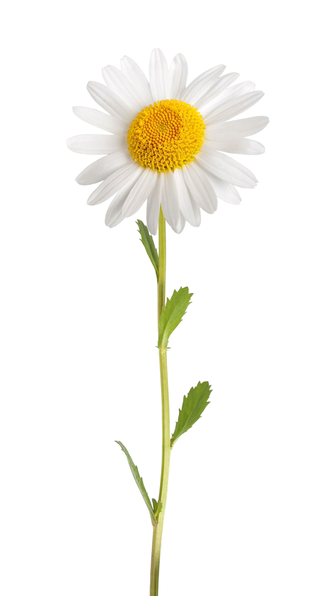
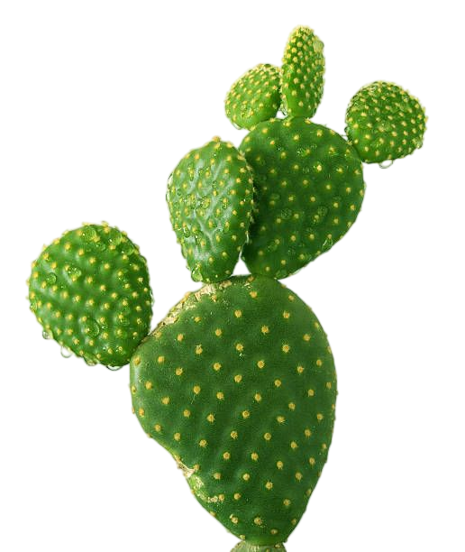
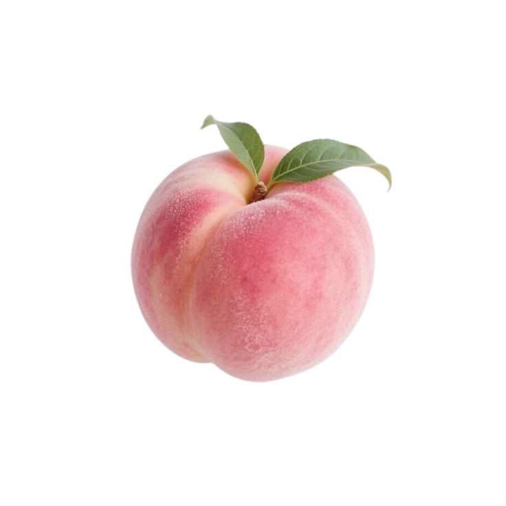

어린 시절의 우리는
가끔 이런 상상을 해 본 적 있을 거에요
눈 앞의 젤리가
커졌으면 좋겠다.
그러면 더 많이 먹을 수
있을 텐데!

터무니없는 상상을
현실로 이뤄주는
형태 변형
어플리케이션

어린 시절의 우리는
가끔 이런 상상을 해 본 적 있을 거에요
눈 앞의 젤리가
커졌으면 좋겠다.
그러면 더 많이 먹을 수
있을 텐데!
터무니없는 상상을
현실로 이뤄주는
형태 변형
어플리케이션
MORPHY WORLD는 눈 앞의 사물 혹은 풍경 등을
사진으로 찍은 후, 사용자가 원하는 대로 크기, 형태, 색상을
실제로 바꿀 수 있는 어플리케이션입니다. 손에 쥐어진 젤리가
조금만 더 커졌으면 했던 어릴 적의 작은 꿈을
MORPHY WORLD를 통해 이뤄봐요!

내 눈 앞의
모든 것을
마음대로
상상만 했던 모든 일들을 현실로 옮길 수 있는 기회가
눈 앞에 주어집니다. 음식의 크기를 키워 마음껏 먹을 수 있고,
내가 좋아하는 색깔을 물건에 입히거나, 별 모양 머리핀을
하트 모양으로 바꿀 수도 있죠!
사용자에게 위험이 생기거나 실제 세상이 이상하게
변형되지 않도록 지속 시간, 크기와 대상 제한 등
적절한 가이드라인과 금지사항을 두고 있습니다.
그러니 모두 안심하고 MORPHY WORLD를
사용하세요!
위험 요소는
미리 모두 방지
언제나
어디서나
간편하게
핸드폰이나 휴대 기기에 MORPHY WORLD를 깔기만 하면
시간 불문 장소 불문 사용할 수 있습니다!
내가 원할 때 나의 세상을 바꿀 수 있는 셈이죠.
STEP 1.
MORPHY WORLD
어플리케이션에
접속합니다.
STEP 2.
'사진 찍기' 버튼을
찾아 누릅니다.
STEP 3.
변형하고 싶은
물체를 골라
사진을 찍습니다.
STEP 4.
사진을 골랐다면
'완료' 버튼을 누릅니다.
STEP 5.
크기, 형태, 색
원하는 효과로
마음껏 편집하세요!
STEP 6.
당신만의 새로운
물체가 완성되었습니다!
start
take
photo
DONE
scale
form
color
LOADING...
CLICK!
물체 크기 제한
효과 적용이 가능한 최소 크기는 가로 x 세로 x 높이
각 1cm 이상, 최대 크기는 1m 이하입니다. 해당 규격에
어긋나는 물체는 촬영한 후 편집해도 변형되지 않으며
마찬가지로 거대한 건축물이나 풍경 또한 변형시킬 수
없습니다.
변형시킬 수 있는 최대 크기는
기존 부피의 0.1배 ~ 10배입니다.
변형 가능한
사물의 종류
모든 무생물( 자연, 인공물 )은 변형이 가능하며
반대로 살아있는 것은 변형이 불가능합니다.
특히 인간을 변형하기 위해 사진을 찍을 경우
어플 사용 가이드라인에 위반되어 계정이 정지되니
이 점 유의하시길 바랍니다.
카메라와의 거리
물체를 찍음과 동시에 카메라와 물체 사이의 거리가
자동 측정되며, 기기 기준 반경 3m 14cm 안에 있는
물체에만 변형 효과가 적용됩니다.
1회 사용 횟수와
재사용 대기 시간
변형은 사진 한 장에 하나의 물체, 한 번에 3개의
사진까지 편집할 수 있으며 다음 횟수가 다시
충전되기까지는 하루( 24시간 )이 걸립니다.
한 번에 더 많은 사진을 찍고 싶거나 충전 시간을
줄이고 싶다면 밑의 프리미엄 패키지를 확인하세요!
지속 시간
현실 세계의 이상화 방지를 위해 변형된 물체는
24시간 후 원상 복구됩니다.
음식의 경우 이미 섭취한 부분은 원래대로 돌아오지
않으며, 먹지 않고 남긴 부분은 복구됩니다. 이외에
다른 물건들은 모종의 이유로 파손되거나 추가
변형되었을 경우에도 다시 되돌아옵니다.( 예를 들어
하트 모양으로 변형된 후 부서진 별 모양 머리핀은
부서진 상태로 별 모양으로 복구됩니다.)








더욱 편리하고 더욱 즐거운
MORPHY WORLD를 이용할 수 있는
프리미엄 패키지